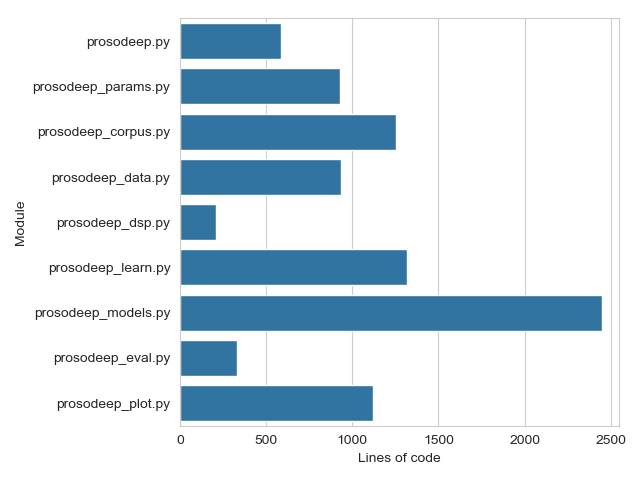

The code implementation for all of the ProsoDeep models is written in Python and is available as free software under a GNU General Public License v3 on GitHub: https://github.com/gerazov/prosodeep
The code includes a code base package named prosodeep and a main execution script prosodeep.py. The script controls the execution flow and carries out data loading, model initialisation, training and evaluation. Instructions on its use and the various parameters will be made available soon on Read the Docs at https://prosodeep.readthedocs.io/
Python was chosen as an implementation language because of the powerful scientific computing environment that is completely based on free software. The code is built upon NumPy within the SciPy ecosystem. The neural network models and their training were implemented in PyTorch, which is a powerful deep learning platform centered on Python that allows for rapid model prototyping and easy debugging. Great attention was put on code readability, which is also one of the features of good Python, augmented with detailed functions docstrings, and comments. The code is segmented in Spyder cells for rapid prototyping. Other packages used in the code include:
Finally, the whole code is licensed as free software with a GNU General Public License v3. The code can be found
All of the ProsoDeep prosody models are implemented within one code base package named prosodeep. The package comprises the following modules:
prosodeep.py — main module that controls the application of the chosen model to a chosen dataset.prosodeep_params.py — parameter setting module that includes (this list is not exhaustive):prosodeep_corpus.py — holds all the functions that are used to consolidate and work with the corpus of data that is directly fed and output from the SFC model. The corpus is a Pandas data frame object, which allows easy data access and analysis.prosodeep_data.py — comprises functions that read the input data files and calculate the \(f_0\) and duration coefficients,prosodeep_learn.py — holds the training functions for backpropagation and analysis_by_synthesis,prosodeep_model.py — holds all of the neural network models used by the various prosody models,prosodeep_dsp.py — holds DSP functions for smoothing the pitch contour based on SciPy,prosodeep_plot.py — holds the plotting functions based on matplotlib and seaborn.Currently, prosodeep supports the standard Praat TextGrid annotations, and calculates pitch based on Praat PointProcess pitch mark files. We plan to integrate state-of-the-art pitch extractors in the near future, e.g. the Kaldi pitch extractor.
The total line count of the ProsoDeep code is 9,128 and is distributed among the modules as shown in Fig. 1.

Fig. 1 — Bar plot of the line count for the main script and modules of the prosodeep package. Total line count is 9,128.
Unlike the prosodeep package, the PySFC package, named sfc only offers the SFC modelling paradigm. Since it does not use deep learning it is entirely based on scikit-learn for the machine learning.
The PySFC implementation is available as Free Software on GitHub: https://github.com/bgerazov/PySFC
The sfc package comprises the following modules:
sfc.py — main module that controls the application of the SFC model to a chosen dataset.sfc_params.py — parameter setting module that includes:sfc_corpus.py — holds all the functions that are used to consolidate and work with the corpus of data that is directly fed and output from the SFC model. The corpus is a Pandas data frame object, which allows easy data access and analysis.sfc_data.py — comprises functions that read the input data files and calculate the f_0 and duration coefficients,sfc_learn.py — holds the SFC training function analysis_by_synthesis() and the function for NNCG initialisation,sfc_dsp.py — holds DSP functions for smoothing the pitch contour based on SciPy,sfc_plot.py — holds the plotting functions based on matplotlib and seaborn.The PySFC supports the proprietary SFC fpro file format in addition to the standard Praat TextGrid annotations. As in prosodeep pitch is calculated based on Praat PointProcess pitch mark files.
PySFC also brings added value to the SFC by adding the possibility to adjust the number of samples to be taken from the pitch contour at each rhythmical unit vowel nucleus, and with its extended plotting capabilities for data and performance analysis.
The total line count of the PySFC code is 3,026 and is distributed among the modules as shown in Fig. 2.
Fig. 2 — Bar plot of the line count for the main script and modules of the PySFC code. Total line count is 3,026. The same axis is used as in Fig. 1.